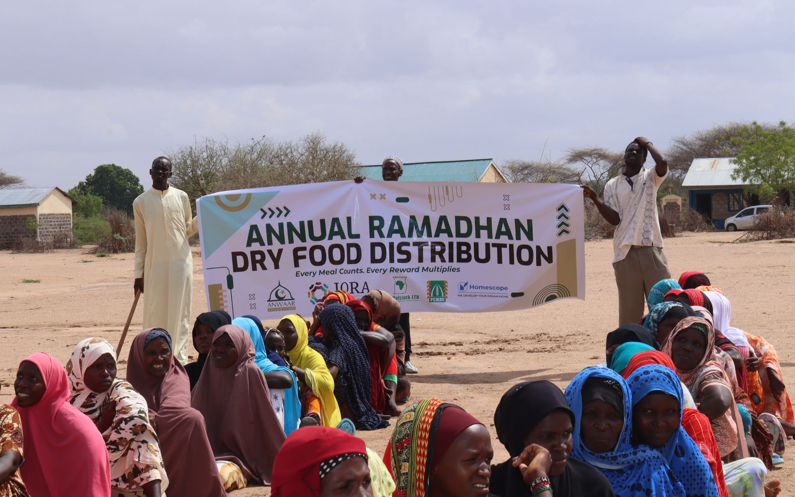
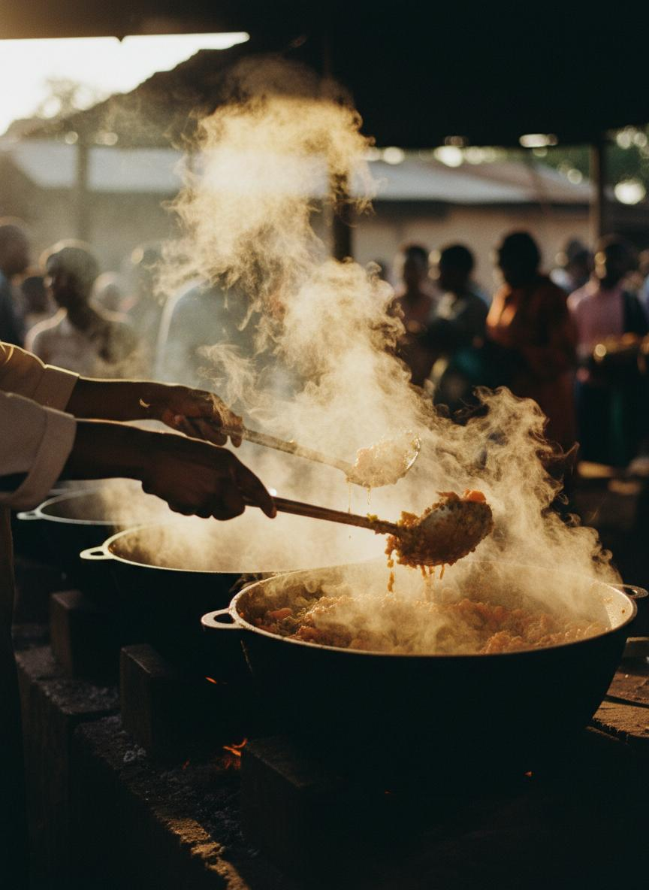
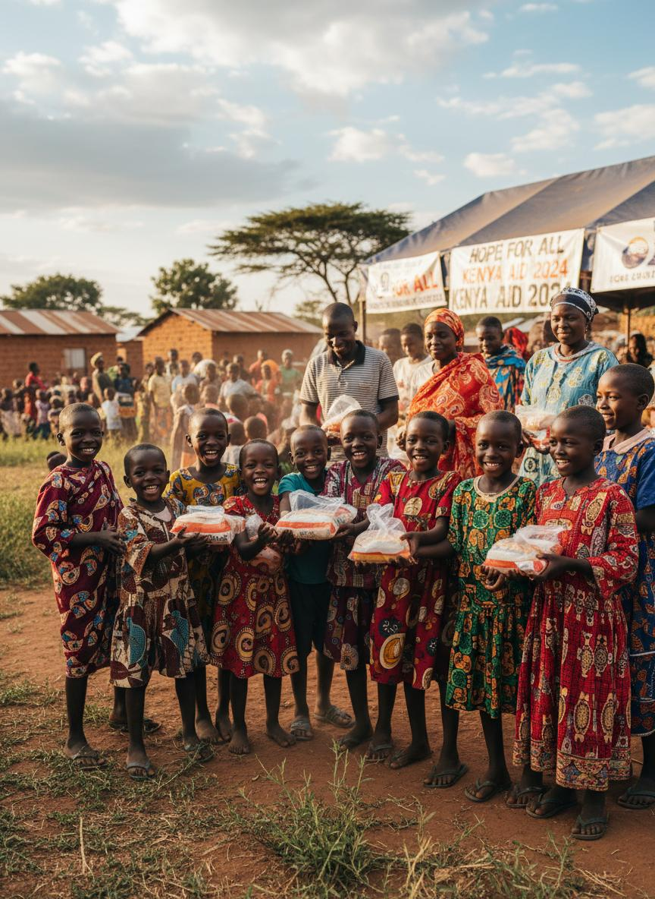
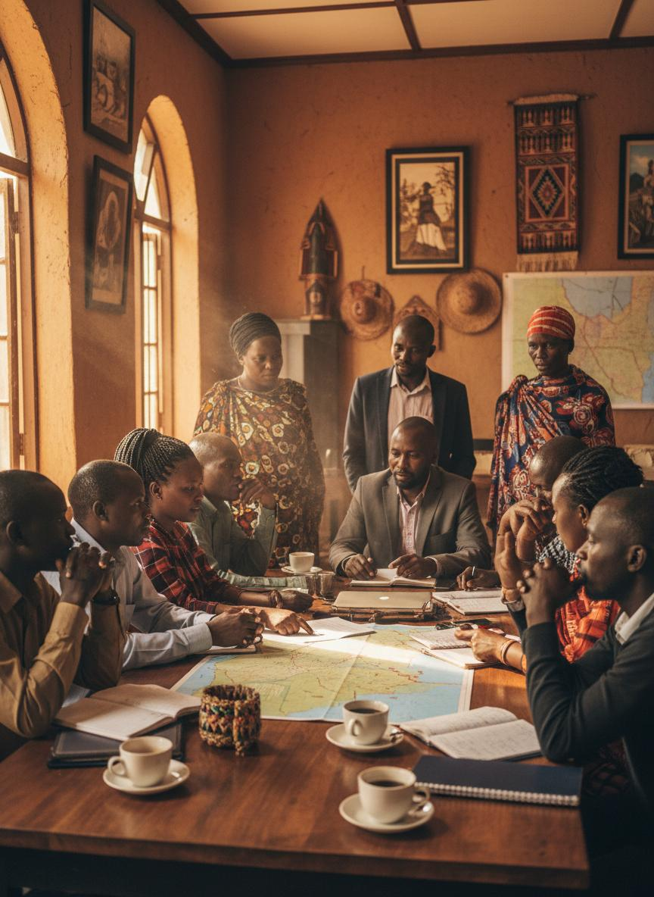
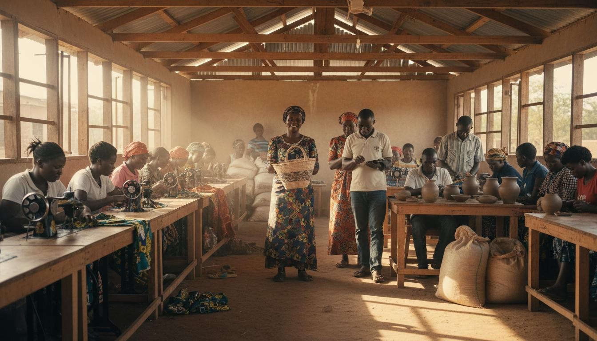

5,000+
People Reached

Programs / Dry Food Distribution
This year-round intervention delivers dry food supplies to underserved households in remote and high-vulnerability areas.
The program helps stabilize families during economic shocks, seasonal shortages, and crisis periods.
People Reached
Program Cycle
Remote Locations

Remote and high-need communities are selected through local assessments.
Essential items are assembled for practical household consumption.
Teams coordinate timely delivery with local leaders and volunteer support.
Photos from food pack preparation points, transport routes, and household distribution activities.




Video snapshots covering pack preparation, route coordination, and household delivery.
Every donation helps extend consistent food support to families in fragile conditions.